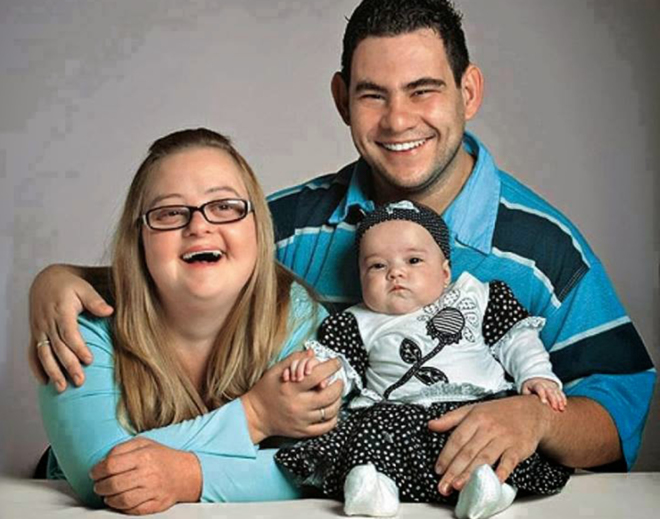
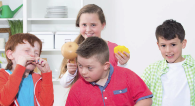
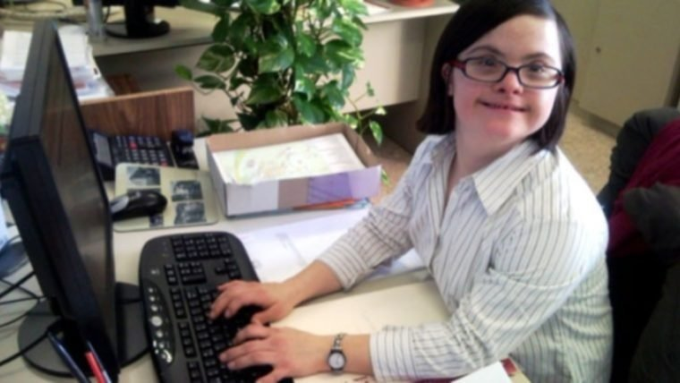

Proyecto para la inclusión con el síndrome de Down
PRO T21 no es solo una página web; es un manifiesto de acción. Nuestro objetivo es derribar las barreras de la sobreprotección y construir puentes hacia la autonomía.

Existe un término en psicología llamado la "Dignidad del Riesgo". Significa que proteger a alguien de fallar es también protegerlo de vivir. Una vida sin riesgos es una vida artificial.
Cuando los padres resuelven todo, envían un mensaje silencioso pero devastador: "Tú no puedes, yo tengo que hacerlo por ti". Esto genera indefensión aprendida.
La sociedad tiende a desexualizar e infantilizar a las personas con síndrome de Down.
Tienen una edad cronológica, mental y social. Un hombre de 25 años con síndrome de Down es un hombre, no un "niño grandote".
Nadie se siente parte de un equipo si se le excluye de las tareas difíciles.

A veces el problema no es que no entiendan, sino que nosotros hablamos demasiado rápido o con metáforas complejas.
Saluda, despídete y conversa sobre temas triviales (el clima, el fútbol, las noticias) tal como lo harías con cualquier vecino. Normalizar su presencia en espacios públicos (cines, parques, transporte) es tarea de todos.

Un ajuste razonable es una modificación en el entorno que permite a la persona desempeñar su trabajo.
Expectativa de Rendimiento: La empresa debe esperar resultados. Si la persona no cumple, se debe revisar si falta capacitación o si el puesto no es el adecuado, igual que con cualquier empleado. Mantener a alguien que no trabaja "por pena" es denigrante.
A veces los compañeros tratan al colega con síndrome de Down como la "mascota" de la oficina (lo consienten, le perdonan todo, le hacen bromas infantiles). Esto debe prohibirse. Es un profesional.
Se ha demostrado que la inclusión mejora el clima laboral general. Fomenta la tolerancia, mejora la comunicación interna (al obligar a ser más claros en los procesos) y aumenta el sentido de orgullo de pertenencia de todos los empleados. No es solo bueno para ellos, es bueno para la empresa.
Ponte a prueba, aprende "El Dato" y conviértete en un aliado de la inclusión.
☝️ Selecciona un tema arriba para empezar el reto.